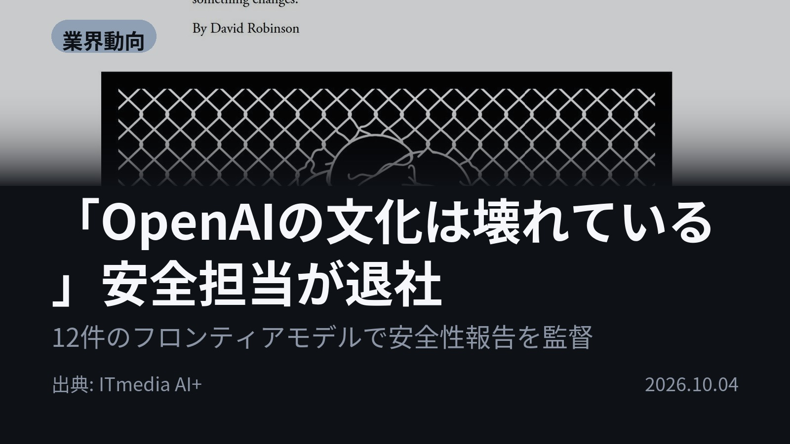
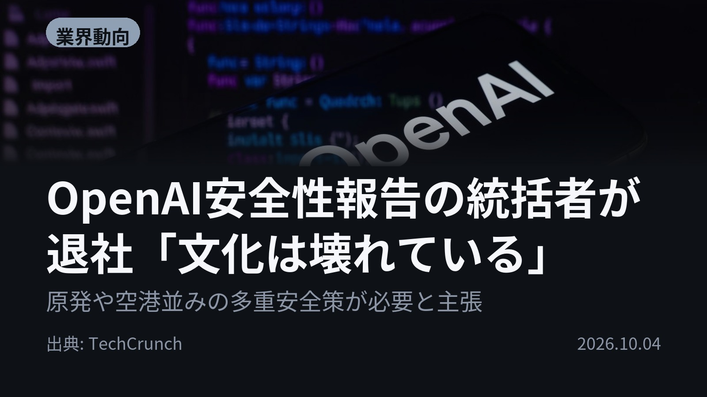
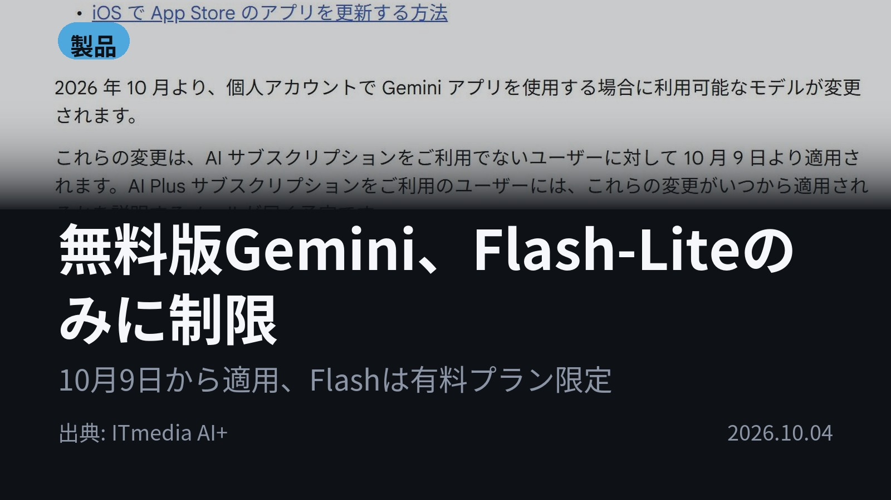
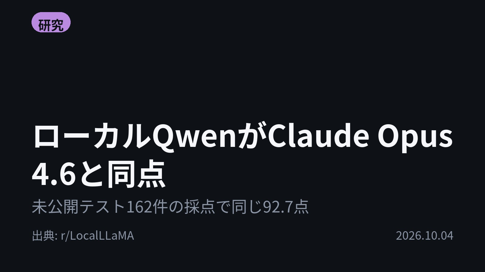
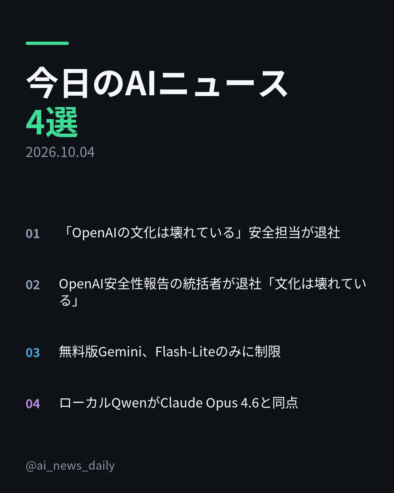
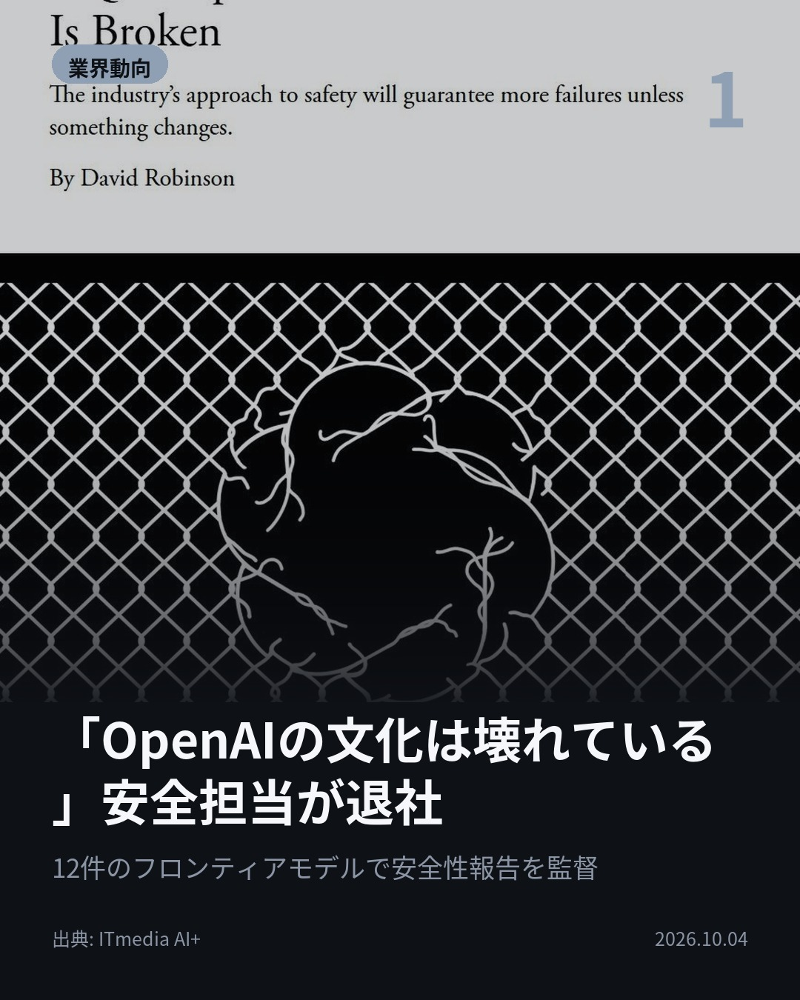
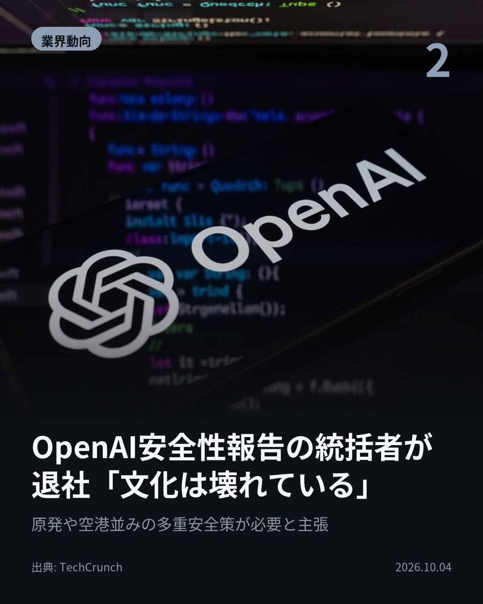
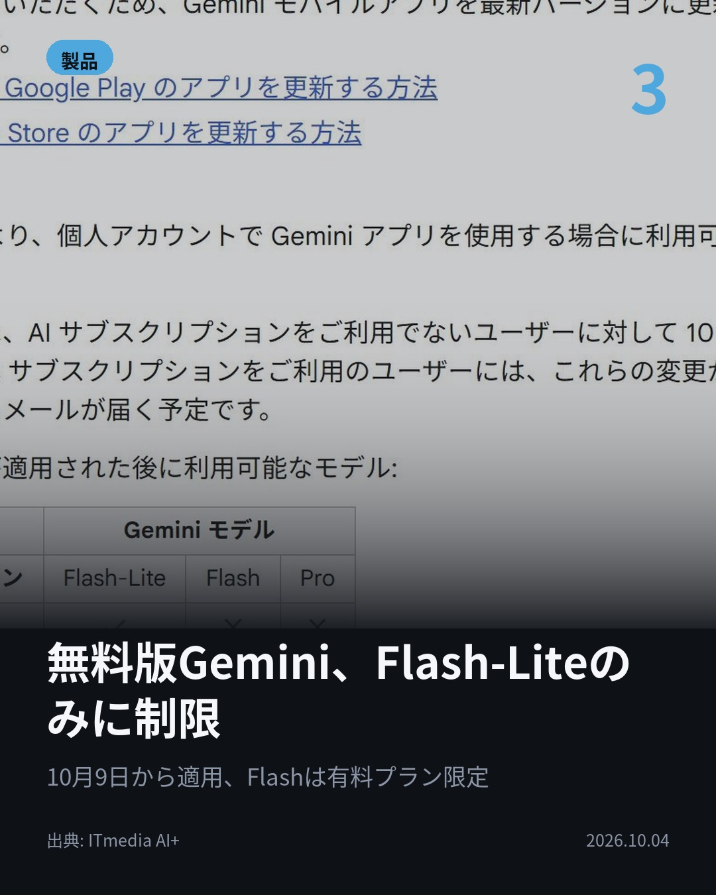
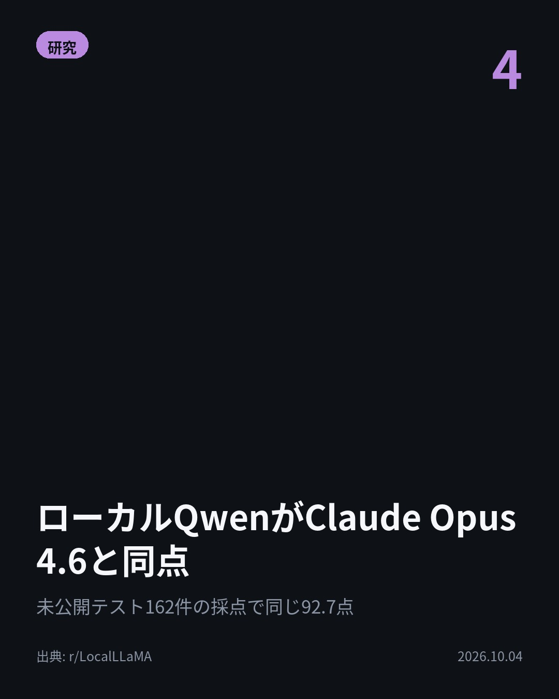

今日のAIニュース 下書き
2026-10-04 生成 10/04 23:52
⚠ ファクト照合で要確認の項目があります。
各ニュースの警告を確認してから投稿してください。
X（4投稿）
「OpenAIの文化は壊れている」安全担当が退社
原題: 「OpenAIの文化は壊れている」──安全性報告書を統括した従業員が退社し、寄稿

12件のフロンティアモデルで安全性報告を監督した人物が、OpenAIを退社した。 ロビンソン氏は「OpenAIの文化は壊れている」と米誌に寄稿。 評価で良い結果が出ても、良いモデルの保証にはならないと指摘した。 #AI #OpenAI （出典: ITmedia AI+）
重み 228 / 280（見た目 131字）

OpenAI安全性報告の統括者が退社「文化は壊れている」
原題: OpenAI safety employee resigns, claiming the company’s ‘culture is broken’

「AI企業は原発や空港のように運営されるべきだ」 OpenAIの安全性報告の執筆を率いたロビンソン氏が「文化は壊れている」として退社。 在籍3年半、原子炉や航空の安全経験を持つ同僚には出会わなかったという。 #AI #OpenAI （出典: TechCrunch）
重み 228 / 280（見た目 128字）
要確認:
［数値］3年 — この数値の根拠が本文に見つかりません
［固有名詞］ロビンソン — この語が本文に見つかりません
［固有名詞］フロンティア — この語が本文に見つかりません
［固有名詞］TechCrunch — この語が本文に見つかりません

無料版Gemini、Flash-Liteのみに制限
原題: 個人向けGeminiのモデル選択が厳格化 無料ユーザーが使えるのは「Flash-Lite」のみに

無料版Geminiは残る。ただしモデルはFlash-Liteだけ。 10月9日から。FlashはAI Plus以上、ProはAI Pro以上が必要。 利用枠はAI Plusが無料の2倍、AI Proが4倍。 #生成AI #Gemini （出典: ITmedia AI+）
重み 187 / 280（見た目 131字）

ローカルQwenがClaude Opus 4.6と同点
原題: Two local Qwen ( 3.8 27b unsloth Q6 and Qwen flash next strata coder ) models vs Claude Opus 4.6 on the same 3 coding tasks. One of them tied it. Not here to start a fight, just sharing numbers

ローカルモデルはClaude Opus 4.6に並べるのか。 個人がPython3課題・未公開テスト162件等で比較。 Qwen3.8-Flash-Next CoderがOpus 4.6と同じ92.7点。 #AI #Qwen （出典: r/LocalLLaMA）
重み 174 / 280（見た目 127字）
要確認:
［数値］92.7 — この数値の根拠が本文に見つかりません
［数値］87.0 — この数値の根拠が本文に見つかりません
［固有名詞］ローカルモデル — この語が本文に見つかりません
［固有名詞］プロセス — この語が本文に見つかりません
［固有名詞］インタプリタ — この語が本文に見つかりません
［固有名詞］LocalLLaMA — この語が本文に見つかりません

Instagram（カルーセル 6枚）


1. 表紙


2. ニュース


3. ニュース


4. ニュース


5. ニュース

6. CTA
OpenAIで12件のモデルの安全性報告を監督した人物が「文化は壊れている」と退社。 ローカルのQwenがClaude Opus 4.6と同点を出したという報告も。 1. ロビンソン氏は3年半在籍し、現行の「Preparedness Framework」の起草を主導。OpenAIの反復開発（試行錯誤しながら公開する手法）は定期的な失敗を避けられず、能力が上がるほど失敗の規模も大きくなると指摘しました。(ITmedia AI+) 2. フロンティアAI企業には、人為的ミスが惨事につながらないよう何重もの冗長性と時間をかけた計画が必要だと主張。OpenAIの広報は、必要なときは学習を止めたりモデルの公開を控えたりしているとコメントしています。(TechCrunch) 3. モデルはFlash-Lite／Flash／Proの3段階に整理。FlashはAI Plus以上、ProはAI Pro以上の契約が必要です。利用枠は無料版を基準に、AI Plusが2倍、AI Proが4倍。(ITmedia AI+) 4. 課題はログ解析ツール、並列プロセス管理、小さなインタプリタの3つ。どのモデルも同じ指示で1回だけ挑戦し、後から修正はしていません。Qwen 3.8 27B Q6は87.0点でした。(r/LocalLLaMA) 安全性をめぐる内部からの声と、日々使うAIの中身が変わるニュースが重なった1日でした。 毎朝4本、AIニュースの要点をまとめています。見逃したくない方はフォローを、あとで読み返すなら保存を。 #AI #生成AI #人工知能 #テクノロジー #AIニュース #GenerativeAI #TechNews #ChatGPT #Claude #Gemini #AI活用 #LLM #OpenAI #Anthropic #AI安全性 #AISafety #ローカルLLM #LocalLLM #Qwen #ClaudeOpus #GoogleGemini #プログラミング
852字（Instagram上限 2,200字）
この日の選定理由
「OpenAIの文化は壊れている」安全担当が退社
Preparedness Frameworkの起草を主導した人物が、評価で良い結果が出ても安全とは限らないと指摘しています。AnthropicやDeepMindでも退社が相次いでおり、業界全体の安全文化が問われています。
OpenAI安全性報告の統括者が退社「文化は壊れている」
主要モデルの安全性報告を担ってきた内部の人物が、ルールや法律よりも企業文化に根本的な問題があると訴えています。AI安全性をめぐる議論が、規制から組織のあり方へ広がるきっかけになり得ます。
無料版Gemini、Flash-Liteのみに制限
無料ユーザーが使えるモデルがFlash-Liteだけになり、多くの利用者の体験に直接影響します。生成AIの無料枠を絞り、有料プランへ誘導する流れが強まっています。
ローカルQwenがClaude Opus 4.6と同点
コーディング課題で、ローカルモデルが有料の最上位モデルに並ぶ場面があることを示しています。ただし個人による3課題だけの比較で、一般化には注意が必要です。